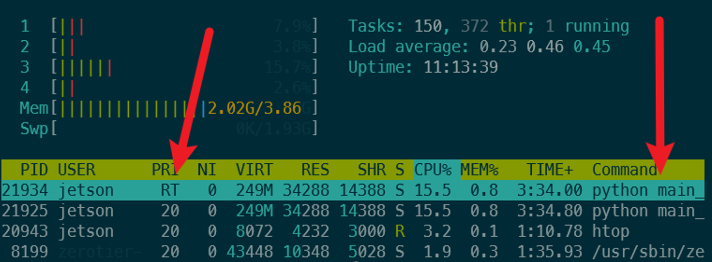

RT Kernel on Jetson Nano
1 Linux RT Kernel Compile Guide
The following guide is intended to provide step-by-step instructions on how to compile a real-time (RT) Linux kernel for the NVIDIA Jetson Nano. The RT kernel is based on the PREEMPT_RT patch, which adds real-time capabilities to the Linux kernel by making it fully preemptible and reducing the latency of the kernel’s interrupt handling.
This guide has been modified from some valuable instructions found at: https://forums.developer.nvidia.com/t/applying-a-preempt-rt-patch-to-jetpack-4-5-on-jetson-nano/168428/4
1.1 Download Source Files and Install Packages
First download the BSP from the NVIDIA website. The BSP contains the kernel source code, device tree files, and other necessary files for building the kernel. The BSP also contains the sample root filesystem, which is used to create the final image for the Jetson Nano. You may wish to look up the most recent version of the Tegra for Linux, in this case we are using R32.7.4.
You can download all of these files onto a Linux machine specifically running Ubuntu 18.04. Another option that has been tested is compiling on the Jetson Nano itself which is running the correct version of Linux by default. For our project we installed 18.04 on a laptop and compiled the kernel there.
Source Files:
https://developer.nvidia.com/embedded/linux-tegra-r3274
Download:
Driver Package (BSP)
Sample Root File System
Driver Package (BSP) Sources
GCC Tool Chain can also be obtained via the command line:
wget http://releases.linaro.org/components/toolchain/binaries/7.3-2018.05/aarch64-linux-gnu/gcc-linaro-7.3.1-2018.05-x86_64_aarch64-linux-gnu.tar.xz
Pile all the files into a single directory and install packages
sudo apt-get update
sudo apt-get install libncurses5-dev
sudo apt-get install build-essential
sudo apt-get install bc
sudo apt-get install lbzip2
sudo apt-get install qemu-user-static
sudo apt-get install python
mkdir $HOME/jetson_nano
cd $HOME/jetson_nanoExtract all of the files
sudo tar xpf jetson-210_linux_r32.7.4_aarch64.tbz2
cd Linux_for_Tegra/rootfs/
sudo tar xpf ../../tegra_linux_sample-root-filesystem_r32.7.4_aarch64.tbz2
cd ../../
tar -xvf gcc-linaro-7.3.1-2018.05-x86_64_aarch64-linux-gnu.tar.xz
sudo tar -xjf public_sources.tbz2
tar -xjf Linux_for_Tegra/source/public/kernel_src.tbz21.2 Apply RT Patch
Go into extracted kernel source and apply RT patch
cd kernel/kernel-4.9/
./scripts/rt-patch.sh apply-patchesConfigure and compile:
TEGRA_KERNEL_OUT=jetson_nano_kernel
mkdir $TEGRA_KERNEL_OUT
export CROSS_COMPILE=$HOME/jetson_nano/gcc-linaro-7.3.1-2018.05-x86_64_aarch64-linux-gnu/bin/aarch64-linux-gnu-
make ARCH=arm64 O=$TEGRA_KERNEL_OUT tegra_defconfig
make ARCH=arm64 O=$TEGRA_KERNEL_OUT menuconfigThe menu config opens an old school BIOS menu. Set the proper settings for the RT kernel:
General setup → Timer subsystem → Timer tick handling → Full dynticks system (tickless)
Kernel Features → Preemption Model: Fully Preemptible Kernel (RT)
Kernel Features → Timer frequency: 1000 HZ
At this point you can go tamper with device tree files (.dtsi) or other things, next step is the compile stage!
1.2.1 Optional Mods
I tried to modify
tegra210-porg-gpio-p3448-0000-b00.dtsi the source file, found using a find file function in terminal. It did not fix things. In general the P3450 model requires the p3448-0000-3449-b00 series of files. This was confirmed by looking at all the source configs and scripts.
1.2.2 Compile
make ARCH=arm64 O=$TEGRA_KERNEL_OUT -j4
sudo cp jetson_nano_kernel/arch/arm64/boot/Image $HOME/jetson_nano/Linux_for_Tegra/kernel/Image
sudo cp -r jetson_nano_kernel/arch/arm64/boot/dts/* $HOME/jetson_nano/Linux_for_Tegra/kernel/dtb/
sudo make ARCH=arm64 O=$TEGRA_KERNEL_OUT modules_install INSTALL_MOD_PATH=$HOME/jetson_nano/Linux_for_Tegra/rootfs/
cd $HOME/jetson_nano/Linux_for_Tegra/rootfs/
sudo tar --owner root --group root -cjf kernel_supplements.tbz2 lib/modules
sudo mv kernel_supplements.tbz2 ../kernel/
cd ..
sudo ./apply_binaries.shThe image creator requires the device model. For the 4GB Jetson nano it is -r 300. This will select the correct dtb:
cd tools
sudo ./jetson-disk-image-creator.sh -o jetson_nano.img -b jetson-nano -r 300It is crucial to select the correct device tree since it will not boot otherwise. If you are unsure of which to select, follow through the source cocde in the jetson-disk-image-creator.sh to find what the different flags do. Or try the NVIDIA forums but good luck over there!
Use Balena etcher to put image in $HOME/jetson_nano/Linux_for_Tegra/tools/jetson_nano.img onto the SD card
2 Python in RT
The python script needs to be run with the priority changed from (20) to highest level (99) for it to be RT enabled.
Running a task at this level could lock the CPU or cause system instability.
2.1 Setting Python Scheduling Privileges
Note that for this description our team is using Python 3.8 in a virtual environment, the instructions path files may change slightly if using a different version.
The scheduling priority is a top-level system command and is usually locked behind ‘sudo’. This is problematic when running a Python script because we don’t want to run it as sudo allowing it full access to wreak havoc on the OS. The solution is to grant only the scheduling part of ‘sudo’ to the Python interpreter:
This command only needs to be set once after Python 3.8 is installed (the same in use in our venv): sudo setcap 'cap_sys_nice=eip' /usr/bin/python3.8
setcap: This is a utility that sets or changes the capabilities of a file/executable. Capabilities are a Linux feature that allow for more fine-grained access control; they provide a way to grant specific privileges to executables that normally only the root user would have.'cap_sys_nice=eip': This argument specifies the capabilities to be set on the file, in this case,/usr/bin/python3.8. It’s composed of three parts:cap_sys_nice: This is the specific capability being set.cap_sys_niceallows the program to raise process nice values (which can deprioritize processes) and change real-time scheduling priorities and policies, without requiring full root privileges.e: This stands for “effective” and means the capability is “activated” and can be used by the executable.i: This stands for “inheritable”, meaning this capability can be inherited by child processes created by the executable.p: This stands for “permitted”, which means the capability is allowed for the executable. It’s a part of the set of capabilities that the executable is permitted to use.
/usr/bin/python3.8: This is the path to the Python 3.8 executable. The command sets the specified capabilities on this specific file.
2.2 Setting Script Specific RT
The ‘RT’ scheduling priority is code 99. Some imported C implementation allows for resetting the scheduling for the process. The function is wrapped in try/except block to ensure it activates.
# Define constants for the scheduling policy
SCHED_FIFO = 1 # FIFO real-time policy
class SchedParam(ctypes.Structure):
_fields_ = [('sched_priority', ctypes.c_int)]
def set_realtime_priority(priority=99):
libc = ctypes.CDLL('libc.so.6')
param = SchedParam(priority)
# Set the scheduling policy to FIFO and priority for the entire process (0 refers to the current process)
if libc.sched_setscheduler(0, SCHED_FIFO, ctypes.byref(param)) != 0:
raise ValueError("Failed to set real-time priority. Check permissions.") We run this function at the start of the script which will reassign the scheduling priority to the highest level. This can be verified to work by opening the system monitor and checking the priority of the script such as with htop.
